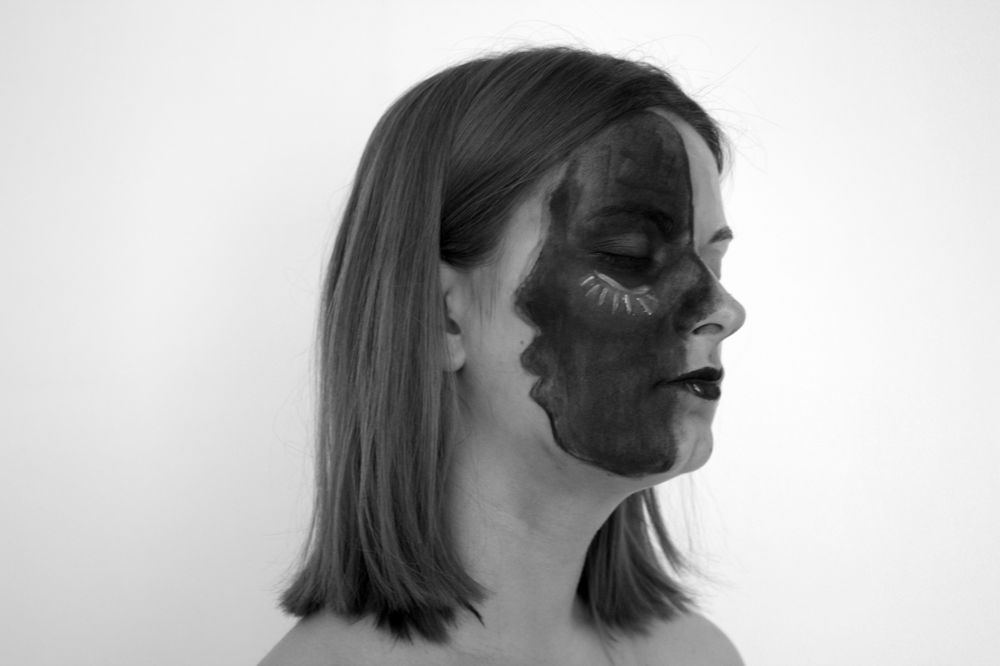

Changes
p.43-44
Documentar fotografando
“Every now and then we see something which sets a new level of excellence in how-to writing. That’s what this book does. The author is one of the best photographers around Suburbia, known for the kind, brutal frankness of his eye. The same goes for his writing. It’s all on the table, every inner trick and turn of how to be a photographer with your life. All the unspeakable stuff like getting published, getting grants, getting the confidence of subjects and the attention of audience, and not paying out too much immortal soul in the process.“
SB
The best place to get a start Is the small town or suburban newspaper. These papers are often “throw aways.” Basically they carry supermarket advertisements, but they also have an editorial department and use photographs. As a small town photographer I photographed everything; editorials, women’s pages, sports, features, and advertising. It was an experience more enriching than a big newspaper because I did seven to ten assignments a day, on a large city paper you seldom do more than two assignments a day .

Some excellent photojournalism will be being done on the small town paper. There you have the freedom to use good photography and develop your talents. If you can take a good picture o f Little League Baseball teams, you can take a good picture of the Oakland A’s. Perhaps the best jobs in photography today are on the small town newspaper because here you have personal freedom and, more important, space to publish yo photographs.
Finally, go make friends with other photographers, journalists and writers. Share your information with them. Other photographers can help you get started by helping you understand editors and magazines. It’s tough work to compete with and sharing information is an important part of learning photography... These photographs illustrate the difference between the use of natural light and strobe light.
A fotografia na esquerda foi tirada com luz natural. A impressão foi 40% preta; a cara está numa sombra muito escura. Como podem ver, a fotografia é escura e contrastada. O contaste elevado apresenta as pessoas de maneira pouco lisonjeadora. Ambas as faces estão iluminadas dramáticamente e a mão da senhora parece uma garra.